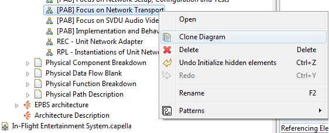

In order to facilitate the alternative architectures set up, a cloning diagram functionality exits in Capella. Directly in the Capella Project explorer, right click on the diagram you want to clone and select Clone Diagram

A diagram template can be set up and then applied to others diagrams in order to save time in diagram layout set up. It also ensures the layout consistency of diagrams.
Example:


Once all your elements are placed on your diagram, you can activate the Layout Mode in order to displace them but their allocation on other elements could not be modified.

You can Copy/Paste the layout and the style of elements to reuse them in another diagram containing the same elements:

It is also possible to Paste only the layout or only the style of elements by right clicking on the diagram, selecting Capella Copy/Paste and then Paste with layout only or Paste with style only

"Arrange All" action correctly arranges automatically diagram elements.